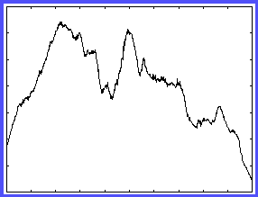
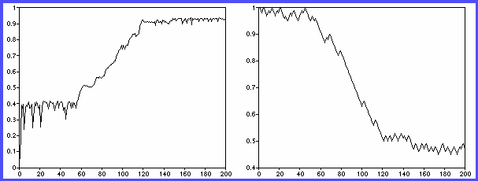

A Repeated Game Solution to the Ovation Problem
A Repeated Game Solution to the Ovation Problem
by
Kim-Sau Chung, Carl Hirschman,
Java Capable? Click here to jump to the simulation
This document is available in poscript as
an_answer.ps
1. Introduction
Our approach to the homework assignment was to model the process of an
ovation in a simple way. This allowed us to complete the modeling and
simulation relatively quickly, and left us with enough time to consider a
repeated ovation problem. The ``stage game'' of our model lacks much of the
richness and detailed structures of other approaches, but the meta-dynamics
of the ``repeated game'' offer insights which are not available in a
one-shot setting.
Our interpretation of the problem is based on motivational assumptions about
both the audience members and the speaker. The latter is thought of as
trying to convey a message to the audience that will induce them to
respond with an ovation. Audience members face a binary choice of sitting or
applauding, and make their choice on the basis of utility maximization.
Their utility is a function of how close the speaker's message is to what
they want to hear, and is also affected by a conformity factor related to
the behaviour of other audience members in their line of vision.
In our repeated version, the audience relocates itself in the auditorium on
the basis of how much they enjoyed the previous talk. Simultaneously, the
speaker tries to change the message delivered using a simple learning
algorithm with an objective of increasing the ovation response of the
audience. Our major finding is that when both sides of the model evolve,
this co-evolution can move the system to a global maximum that is
unattainable if the speaker evolves against a static audience.
The remainder of this document is laid out as follows. Section 2 explains
the formal model of the stage game. The learning dynamics of the repeated
game are explained in Section 3, while simulation results are presented in
Section 4. A brief conclusion and some tentative extensions are offered in
Section 5.
2. A Model of Ovations
The setting is defined as a lattice of i columns and j rows.
There are N audience members (N=i x j) arranged in this array, and
the speaker is located on a stage which is closest to row 0. The message
space is the unit interval [0,1] and is single dimensional.
2.1 The Speaker
The speaker's sole role in the model is to deliver a message (p)
from the unit interval. There is an implicit assumption that the speaker
wants the audience to respond with an ovation, but we do not employ an
explicit utility function to represent this desire.
2.2 The Audience
Every audience member has an idiosyncratic desired message (x_i)
drawn from the unit interval which defines their type. They all share a
basic level of utility to standing (THETA), and the return to standing
decays over time based on a parameter (GAMMA). Agents also care about
conforming, since acting the same as others provides sycophantic
pleasure.
As soon as the speaker has delivered his message, agents choose a
strategy (s_i = {0,1} forall i) where 0 represents sitting and 1
represents standing. This choice determines utility payoffs according
to:
u_i^t(0) = 0
u_i^t(1) = (THETA - GAMMA x t) - |x_i - p| + OMEGA x CONE_i x
s_j
where CONE_i denotes audience members i can see and OMEGA denotes a weighting
parameter
In each period, if the utility to standing exceeds the utility to sitting,
then the agent will stand. The decay parameter ensures that all audience
members will eventually sit.
3. A Model of Repeated Ovations
To capture some type of evolutionary dynamics, the stage game was
repeated with both performer and population subject to inter-period
alteration. The performer's and the population's learning dynamics are
defined by distinct updating procedures. Concentrating on the former, the
performer's learning mechanism is a function of a first difference in
ovation levels, measured as the maximum number of agents standing at any one
time step within a stage game. Given that performance values are assigned
over the interval [0,1], the performer assumes a new position at time
t+1 in the following manner. Let M_k be the maximum number of agents
standing within stage game k and let P_k be the performance level in
that game. Additionally, define:
a = -1 if M_k - M_{k-1} < 0
a = +1 if M_k - M_{k-1} > 0
The performer assumes a position at time t+1 according to:
P_{k+1} = P_k + 0.2 x a
This simple adaptive algorithm amounts to the performer incrementally moving
in the direction which elicited the greatest approval rating.
The audience's dynamics rest more upon their spatial reassignment
within the lattice structure rather than endogenous preference alterations.
Let U_i^k be agent i's utility at the instant the performer makes her
signal public within stage game k; i.e. at k_t = 0. At the close of
this stage game, agents are rank ordered according to U_i^k and then
reassigned to the k+1 lattice as follows. Agent U_i^k, U_i^k > U_j^k
for all other j is assigned position (0,0), the uppermost northwest
cell. Agents are assigned across rows according to their U_i^k level,
leaving last period's most ``dissatisfied'' agent occupying cell
(RowMax, ColMax), the lower-most southeast cell.
Intuitively, this reflects the notion that agents who were most pleased with
the previous lecture will migrate to the front of the auditorium while those
who were not tend to drift towards the rear. To avoid static seating
assignments, agents within each row were subject to a random chance of being
switched. Within each row, a total of 20 agents were randomly exchanged
with replacement so that it was possible to be reassigned more than once.
Results presented here are relatively robust to this shuffling procedure.
Also associated with seating position is a constant cost defined as a linear
function of the agent's proximity to the stage. If R_i^k denotes agent
i's row position in stage game k with 0 being closest to the stage and
RowMax is the total number of rows, the cost function is defined as:
cost = (RowMax - R_i^k)*0.001
Together the updating procedures characterize a situation of limited
co-evolution. The performer is attempting to discover a performance level
which engenders the largest ovation while agents are simultaneously being
reassigned to form a new landscape. Even in this admittedly simple case,
relatively complicated co-evolutionary dynamics can emerge as presented
below.
4. Simulation Results
The model outlined above was simulated in C and Java using a variety
of editors, compilers, operating systems, and hardware platforms.
4.1 The Stage Game
As our main interest lay in examining the meta-dynamics of audience
and speaker learning, the stage game was run only to ensure that an ovation
was possible. Surprisingly, our simple specification produced a very rich
landscape.
Figure 1 - The Stage Game Landscape

Figure 1 shows the ovation level (number of audience members standing)
against the message delivered by the speaker. The audience is held constant,
so this is a comparative statics diagram. Given the variation in this
diagram, the speaker would face a difficult learning problem in the absence
of co-evolution on the part of the audience.
4.2 The Repeated Game
The repeated game was simulated under a variety of parameter
specifications. While it is a trivial problem to set parameter values that
ensure a total ovation (ie. THETA = Infinity) or no ovation whatsoever
(ie. THETA = -INFINITY), more interesting behaviour required a significant
amount of tuning.
Figure 2 - Coevolution in the Repeated Game

Figure 2 shows the evolution of the system for one run of the
simulation. The right panel shows the message delivered by the speaker,
while the left panel indicates the highest proportion of the audience that stood
at any point in each ovation stage game.
Inspection of these results highlights two interesting points: (1) these
paths have an interesting and non-monotonic structure, but do reach an
equilibrium, and (2) co-adaptation has resulted in a convergence that would
have been nearly impossible had the speaker been evolving against a fixed
audience (given our treatment of the problem and the simple learning
algorithm employed).
5 Conclusion
The framework developed in this model could, with some modification, be
applied in other contexts. The most obvious of these is an entire course on
economics, where the professor learns what the students want to hear while
the students repeatedly shuffle themselves around the class according to
their appreciation of the last lecture. A series of regular meetings between
a manager and workers, a director and shareholders, or a parent and children
are some other potential applications. A monopoly model of incremental
change to a good's characteristics could also be considered with some
more substantial modifications.
There is still a great deal we do not know about the model. Sensitivity
analysis should reveal the relative importance of parameters to the results
achieved.
Appendix A - The Simulation in Java
The Simulation:
- On some web browsers, you may have to push stop and then
push start to see the simulation.
- When a square is filled in, it means that audience member is
standing.
- When the auditorium is blank, it means everyone has sat down; the speaker then moves
position, the audience members are shuffled according to their
preferences, and the next ovation cycle begins.
- The colours refer to the speaker's message and the agents' desired
messages.
- The Shake Audience button randomly redistributes agents in the
auditorium.
- The Shake Speaker button randomly moves the speaker to a new position.
- Shake Both does both a Shake Audience and a Shake Speaker.
- The evolve button is not yet implemented.
- To see the Java source code, click
here.
- To get a Java-capable Web Browser, click here.
- To learn more about Java, start here.
- Go to the top of this document.